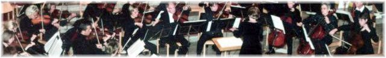

Über das IEG
Über das IEG
Auftritte
Mitspielen
Probenplan
Presse
Gönner

Mitspielen?
Ich passe nicht mehr ins Schulorchester. Wohin?
Ich habe auch mal Geige/Viola/Cello/Bass gespielt...
Das hören wir oft. Aber dann fehlt der Mut, sich bei einem Orchester zu melden. Wagen Sie es! Auf Wunsch erhalten Sie Starthilfe in Form einiger Auffrischungslektionen. Wir freuen uns auf Ihren Anruf:
041 855 38 92 Letizia Zaugg oder 041 832 20 63 Esther Büeler
Das IEG probt wöchentlich am Donnerstag um 20:00 Uhr, meistens im Schulhaus Sonnegg in Goldau. Genaue Angaben enthält der aktuelle Probenplan.
Jeweils im Herbst ist unser Jahreskonzert. Dazwischen begleiten wir den Kirchenchor Goldau an Weihnachten und an Ostern, oder treten zu speziellen Anlässen auf.

hosted by Xilab
modif 2022-12-22
Startseite | Über das IEG | Auftritte | Mitspielen | Proben | Presse | Gönner